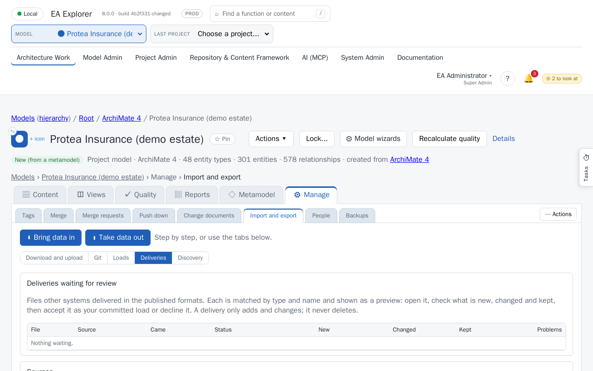

Push data with Python
For: Developers
A push source and the Python kit: your records sent in one call, proposed as a delivery.

#/metamodel/{m}/import/deliveriesWhy do this
Where a system can run a script, Python can read its data and push it to EA Explorer as a delivery for review. The kit includes the script and a mapping you edit. See Data in and out: integration.
Every route in ends the same way: what arrives is shown as new, changed, kept and problem rows, and a person decides. That review is what lets you automate feeds without losing control of the model.
In TOGAF terms: Supports the content of phases B, C and D (baseline architectures), keeping the Architecture Landscape current from the systems that already know it. See EA Explorer and the TOGAF Standard.
The goal: A script sends data into a model as a delivery.
Before you start Someone who may change the model sets up a push source on its Import and export › Discovery tab.
Steps
- On the push source's panel, Push with Python, then Download the Python kit (zip):
push_to_eax.py,requirements.txt(pandas and requests), aREADME.mdand sample CSV files for every type of the model. - Set up Python as the README says (a venv), and try the samples.
- Your own job sends its records:
push_dataframe(url, df, username, password)for one set,push_dataframesfor several (related sets go together, so their links become relationships). Sign in with a user name and password, or a token. - What arrives is proposed as a delivery, previewed and accepted by a Committer.